GUI Controls Building  ( march 2009 )
( march 2009 )
Application Designer / Domain Expert / Control Designer / Core Developer
Introduction
Controls are the basic GUI building blocks used in Bricks, they perform the interaction between the Brick and the user. Control classes are detected automatically and therefor they should always reside in a file with a name starting with "control_" which should be located in the directory "PyLab_Works/controls/", and the name of a control class should always start with "t_C_". Besides that, control classes should always be a subclass of "PG.My_Control_Class".
Simplest Control
Let's first look at the most simple control currently available, e.g. the Static_Text, just a static text label. The control is derived from wx.Static_Text and PG.My_Control_Class, in this order, so that the properties and the methods of wx.Static_Text will yield (as far as they exists), instead of the ( sometimes dummy ) properties and methods of PG.My_Control_Class. The first thing to do in the __init__ method, is always to generate the PG.My_Control_Class instance, because this will generate all necessary attributes (like self.Dock, self.X ) from the input parameters ( see below for all the available properties and methods )
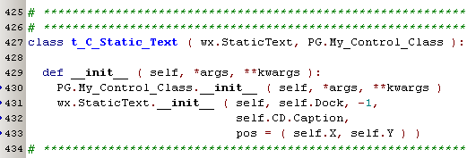
Using this Control in a Brick, like this:
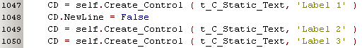
will result in a GUI-interface, like this:
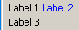
As you can see, positioning, scaling, alternate coloring, etc. are all done by the wrapper methods. Also saving and reloading of the settings is done by the wrappers.
Data transport between Brick and Controls
Looking at the schematic below, shows that the communication between a GUI-control at it's parent Brick is always done through the Par-array of the Brick. If a control acts on the same Par as an input (e.g. Par [2] and Control [1]), the input is automatically passed to the control and the control decides what value will be passed to the Brick. A Control can also have extra parameters (e.g.Par [3] - Control [2] or Par[4] - Control [2] ), to exchange information between the Brick and the Control. Notice that the numbering starts at "1", which is done to get a human representation in the Brick Definitions. Don't bother with the complex numbering for the controls, because they'll see a zero-based Par-array, only containing the elements that concerns them.

Each control has at least 1 Par associated, but each control can ask for more Par's (so called Extra-Pars, through _EP_Add) to communicate with the Brick. The control can decide for each control if it's a relative simple parameter or a (special) dictionary. Within the control the Par's are available through the P-array, which is simply zero-based, and has exactly the amount of elements as the number of Par's the control has asked for.
Properties & Methods
In the lists below, for clarity "self" is replaced by the object's base name. The first item in the comment, between brackets is the default value.
Brick
Brick.Control_Defs [ CD0, .. ] # Array of pointers to the definition of each Control
Brick.Control_Pane # AUI pane, containing the GUI-Controls
Brick.GUI_Controls [ C0, .. ] # Array of pointers to the GUI-Controls
Brick.Diagnostic_Mode
CD[0] = super_object ()
CD[0].Brick # For easy accessing the Brick
CD[0].GUI_Control # For easy accessing the associated Control
CD[0].Type # Control-Type
CD[0].Caption # ('') Label in the upper left corner
# In some cases e.g. Buttons, this is a list with the Buttons captions
CD[0].Initial_Value # Default / Initial Value
CD[0].Input_Channel # (None) The index of the Brick's input [1..], to which the control is connected
CD[0].NewLine # (True) The next control (if any) will be placed on a new line
just for some specific controls, in comment some controls that use these. See the specific control for a more extensive explanation.
CD[0].Range # Radio_Buttons, Slider
CD[0].Value # ???
CD[0].NCol # Radio_Buttons
CD[0].Log # Slider: Linear / Logarithmic
CD[0].Format # Slider
GUI_Control
C[0].Brick #
C[0].CD # The Control_Description of this control
C[0].Dock # The control Pane on which the control is placed
C[0].TopFrame # The application Frame
C[0].Caption # (None) Caption of the AUI Frame
C[0].Test # (False) If True this Control will run in Test-Mode
C[0].Ini #
C[0].X # Left-Top of this Control
C[0].Y # Left-Top of this Control
C[0].IniSection #
C[0].EP # [ None ] Don't use this !!
C[0].EP_IsDict # [ False ] Don't use this !!
C[0].P # This is thé array to get into contact with the Bricks Par-array
methods
C[0].Load_Settings #
C[0].Save_Settings #
C[0].Display_Label # ???
C[0].Kill #
C[0].SetValue #
C[0].GetValue #
C[0].SetPosition #
C[0].SetSize #
C[0].GetSize #
C[0].SetForegroundColour #
C[0].SetToolTipString #
event handlers
C[0]._On_Event # Bounded to all kinds of events
C[0]._On_Size #
Control Pane
Pane.Brick #
Pane.CD # points to the Bricks Control_Defs
Pane.GUI_Controls #
Pane.x # during building, the current left top for the next control
Pane.y # during building, the current left top for the next control
Control Methods
Positioning and Sizing
SetPos, SetSize, GetSize
Override the GetSize method:
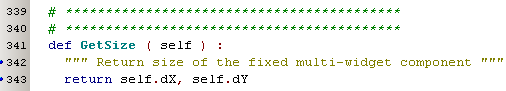
Control.SetValue, Control.GetValue
If the base control has a different naming for these functionalities ( like ColourPicker ) or if special processing is needed ( like validation ) these methods should be implemented.
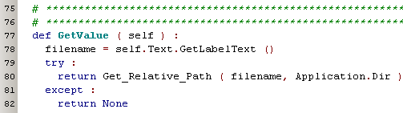
In case only the name differs, it's often more convenient to just redirect the methods:
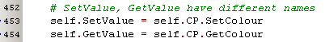
Control.SetForegroundColour
Subsequent controls are alternate colored, so it become's more clear which elements belong to which control (like a label telling the meaning of a slider). If the control has more than 1 widget, you've to implement this method and step through all the controls to give them the right color.
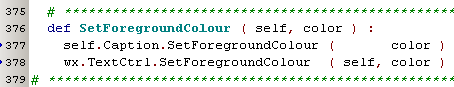
Control.Save_Settings, Control.Load_Settings
If the control settings are completely definied by the SetValue / GetValue values, then there's no need to implement this method. But if the control wants to save / restore some extra settings, than it has to implement this method.
Does it has to store GetValue ????
By defining self.Type ( default None ),
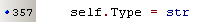
SetValue (and maybe other methods in the future) assures the correct type.
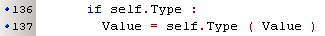
Control.Kill
This method is called when the control is being destroyed. In general there's no need to implement this method. But some controls ( like Scene_VPython) need special processing before they are killed, in that case this method might be implemented.
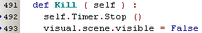
Control Test Methods
There's a control manager available, in which you can easily build and test individual controls. For complex controls it's difficult to create the necessary input signals, therefore each control has 3 dummy test methods (Test1, Test2, Test3), which can be overriden by the control implementation. Here an example that generates a few real-time signal to test the scope plot. The doc test is important because it's assigned to the Test-Keys as a tooltip.
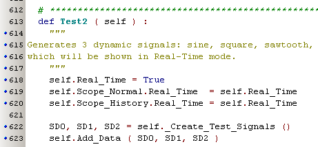
Control Events
In PG.My_Control_Class a lot of events are already bound (see actual code in PG for a complete list). If an event-type is missing, it's best to add it in PG.My_Control_Class, so it will be available for future use.
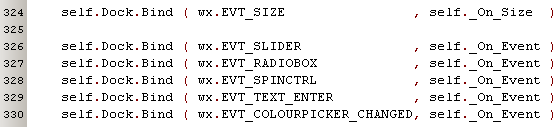
Main Menu Bindings
Claiming a statusbar field
It's possible to claim one or more fields in the statusbar of the application. In the creation of a control we can ask for the next free field of the statusbar, like this:
# we want a StatusBar Field
self.My_StatusBar_Field = len ( Frame.StatusBar_Controls )
Frame.StatusBar_Controls.append ( self )
And if want to change "our" statusbar field:
self.Frame.StatusBar.SetStatusText( 'CE modified', self.My_StatusBar_Field )
Pane
Brick_2_Control
If an input of a Brick changes, the Brick will call this method to transport the input value to the control.
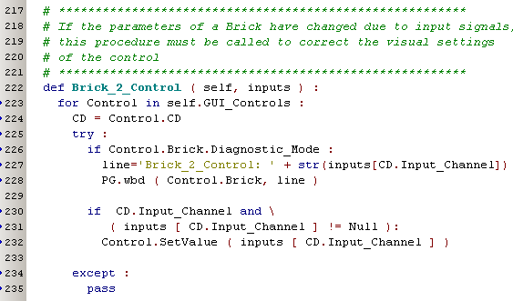